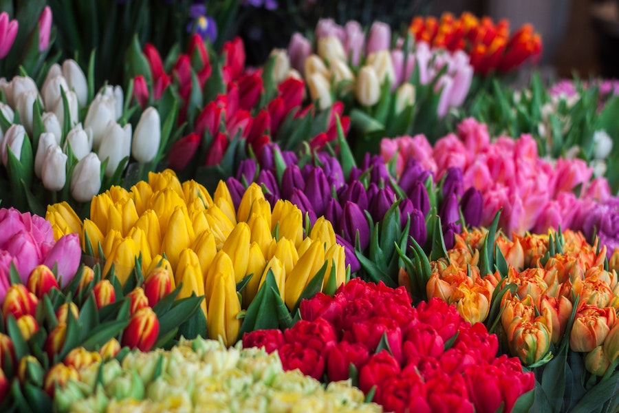
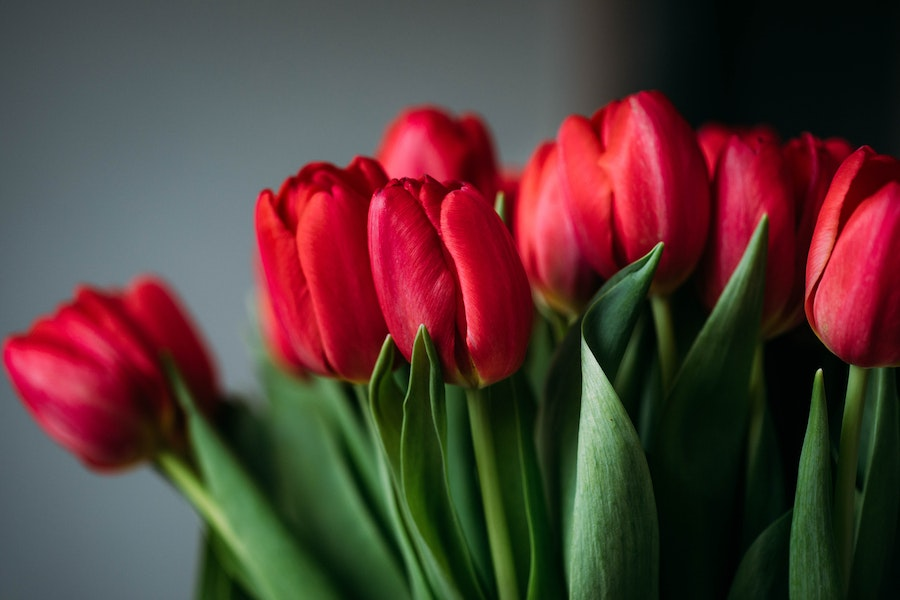

Imagens



As tulipas estão disponíveis em uma ampla gama de cores, incluindo vermelho,
rosa,
amarelo, laranja, roxo e até mesmo tons bicoloridos. Existem também
várias variedades, incluindo
tulipas simples, papagaios, triunfos, Darwin e
muito mais, cada uma com suas próprias características.
As tulipas são originárias principalmente da região da Turquia,
embora tenham
se espalhado para outras partes do mundo ao longo dos séculos.
As tulipas geralmente florescem na primavera, embora a época exata
de
floração possa variar de acordo com a região e o clima.
Para cuidar das tulipas, é importante plantá-las como bulbos no outono antes
do inverno.
Elas preferem solo bem drenado e luz solar direta. Após a floração,
deixe as
folhas morrerem naturalmente para que os nutrientes sejam
armazenados nos bulbos para a próxima temporada.
As tulipas são populares em arranjos florais devido à sua aparência
elegante
e simplicidade.
Elas são frequentemente usadas em buquês de casamento e
decorações de primavera.
Em algumas culturas, as tulipas são associadas a significados como amor
verdadeiro,
elegância e prosperidade.
Na Turquia, as tulipas têm uma
longa história cultural e são consideradas um símbolo nacional.
As tulipas são geralmente resistentes e podem sobreviver a
invernos
rigorosos, tornando-as adequadas para muitas regiões.
As tulipas podem ser propagadas por meio de bulbos e,
após algumas
estações de crescimento, os bulbos produzirão flores.
Algumas variedades populares de tulipas incluem "Tulipa 'Apeldoorn'",
"Tulipa 'Queen of Night'", "Tulipa 'Angelique'" e "Tulipa 'Red Emperor'".
As tulipas são consideradas flores perenes e podem retornar ano após ano,
desde que sejam cuidadas adequadamente.
As flores das tulipas têm uma forma distinta com seis pétalas que
se abrem
em forma de taça.
Algumas variedades têm pétalas lisas, enquanto outras têm
pétalas franjadas ou onduladas.
Algumas cidades ao redor do mundo, como Amsterdã,
são famosas por seus
festivais de tulipas,
onde os campos são cobertos com flores coloridas em
plena floração.
As tulipas comuns, que incluem variedades amplamente disponíveis,
geralmente
têm preços acessíveis. Você pode encontrar
bulbos de tulipas comuns em lojas
de jardinagem por preços que variam de R$ 1 a R$ 5 por bulbo.
Tulipas de variedades especiais ou cores raras podem
ter preços um pouco mais
altos. Os bulbos de tulipas especiais podem variar
de R$ 5 a R$ 15 por bulbo,
dependendo da raridade e da demanda.
Se você estiver comprando tulipas em forma de buquês ou arranjos florais prontos,
os preços podem ser mais elevados,
geralmente variando de R$ 20 a R$ 100,
dependendo do tamanho do buquê, da qualidade e da quantidade de
flores.
Cultivar tulipas a partir de bulbos pode ser uma opção econômica.
Os custos
iniciais estarão relacionados à compra
dos bulbos e dos materiais de plantio,
mas, uma vez estabelecidas, as tulipas podem florescer ano após ano.
A compra de tulipas online também é uma opção, e os preços podem variar
dependendo do vendedor e das condições de envio.
Certifique-se de
pesquisar e comparar os preços antes de fazer uma compra online.